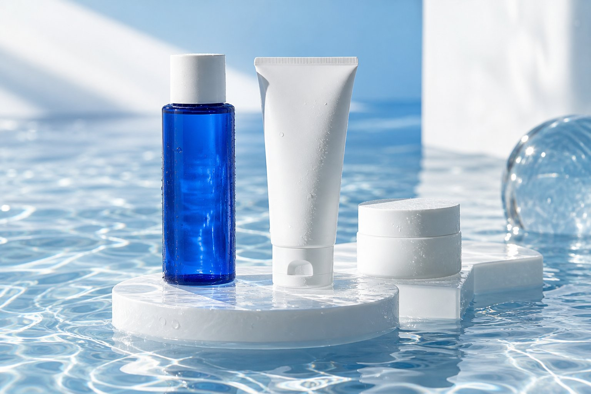

01
洗う
WASH一日の汚れを、やさしくオフ。
泡を手のひらに広げて、肌をこすらず丁寧に。
肌のことを考えすぎて、疲れていませんか。
また気になって、
鏡をのぞいてしまう。
いろいろ試して、
何を選べばいいか迷う。
忙しい日にも、
ちゃんとケアしたい。
肌の調子で、一日の気分まで決めたくない。
suiが考えるのは、そんな毎日に寄り添うケア。
あれこれ足す前に、毎日の基本を心地よく。
OUR PHILOSOPHY
洗うこと。うるおすこと。守ること。
特別なことを増やすより、
いつもの時間を、少し丁寧に。
suiは、毎日の基本に向き合う
スキンケアを目指しています。
A SIMPLE ROUTINE
朝も、夜も。
続けやすいシンプルさを。
泡を手のひらに広げて、肌をこすらず丁寧に。

02手のひらで包み込むように、毎日の保湿時間を。
お手入れの仕上げに、保湿のひと手間を。
SKINCARE IS SELF-CARE.
今日の肌も、今日のあなたも。
大切にするところから、はじめよう。
YOUR DAILY ROUTINE
sui デイリーケアセット
洗顔・化粧水・保湿クリーム。
基本の3ステップを、ひとつの習慣に。
※ 実在する商品ではありません。パッケージ・構成はデザイン提案です。
BEFORE YOU CHOOSE
成分や使用方法は、購入前にわかりやすく。
価格やお届け、返品のこと。大切な情報を、見える場所に。
肌との相性も、続け方も。自分のペースで考えられるように。
QUESTIONS & ANSWERS
はじめる前の、小さな疑問に。
洗顔、化粧水、保湿の順に使うケアを想定しています。実際の使用量・使用頻度は、正式な商品の表示に沿ってご案内します。
使用前に商品の全成分や注意事項をご確認ください。肌に異常があるときや、使用中に違和感があるときは使用を控えてください。
このページは提案用の架空ブランドです。効能を保証するものではありません。実際の商品区分・承認内容を確認したうえで、適切な商品説明を掲載します。
販売条件は未設定です。正式なページでは、通常購入・定期購入の違い、総額、お届け頻度、解約条件を購入前に確認できる形で表示します。
現在はデザインと導線をご覧いただくためのコンセプトページです。注文・決済・個人情報の送信は行いません。